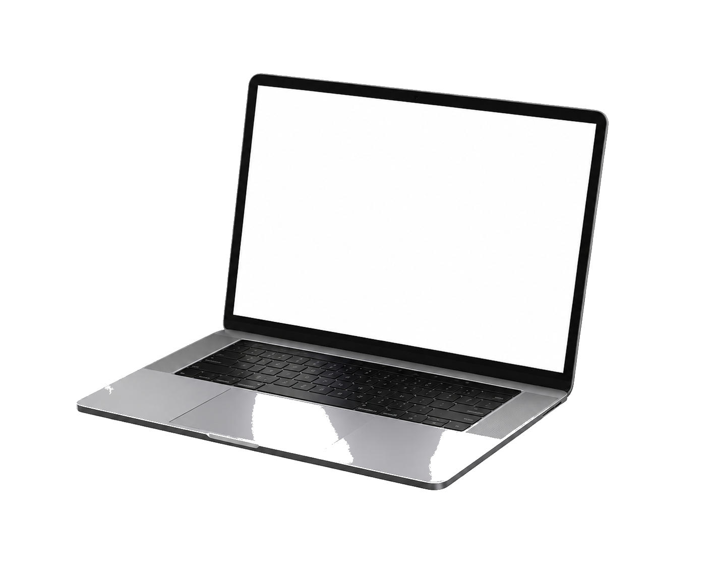
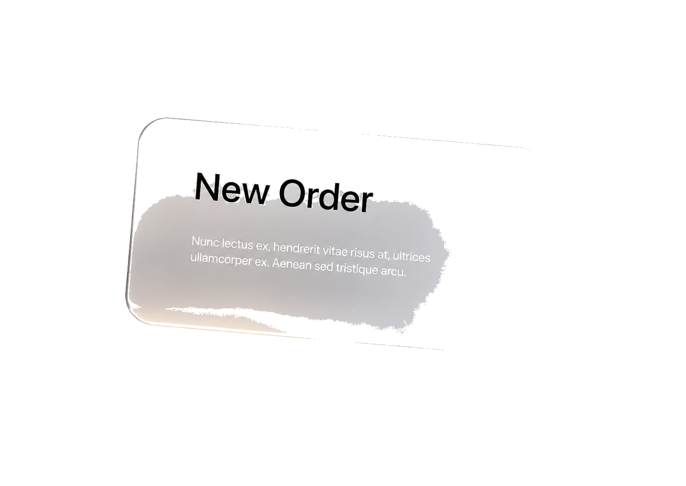
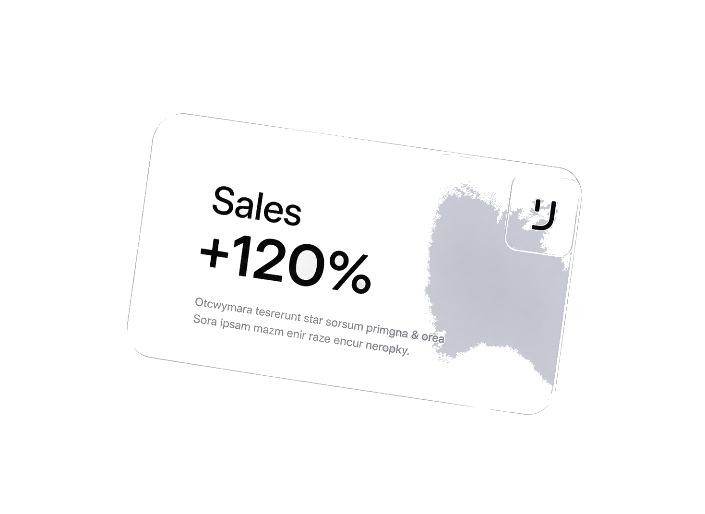
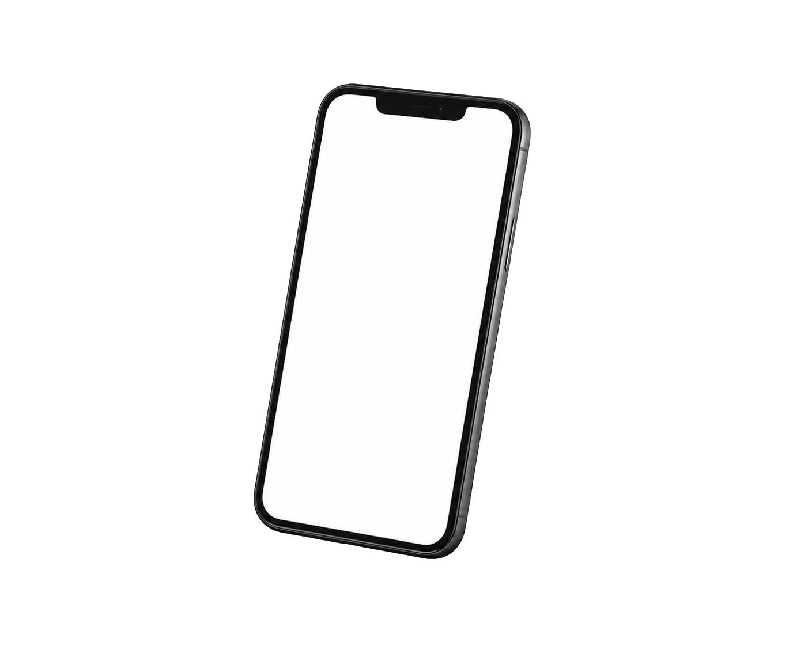

Demo · Storm — proof of product
Storm bouwt zich op — laptop, dossiers, meldingen, mobiel. Elk element verschijnt, blijft, en het beeld wordt compleet. Beweeg je muis voor diepte.




Geen losse mailboxen of Excel-bestanden meer — één traceerbaar dossier, op elk scherm.